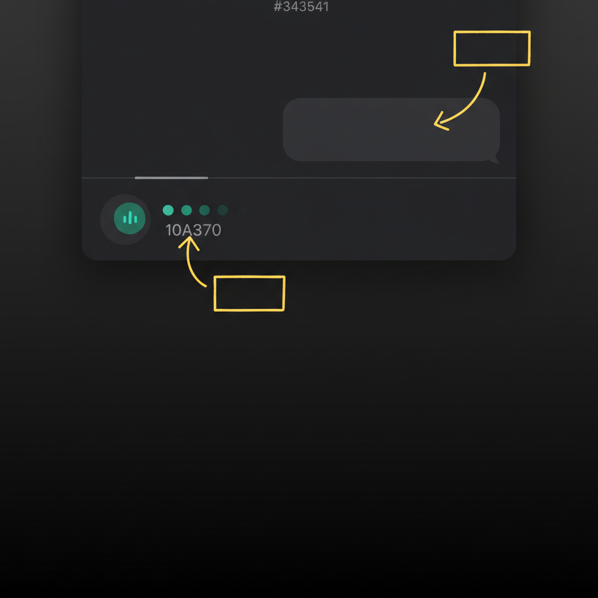
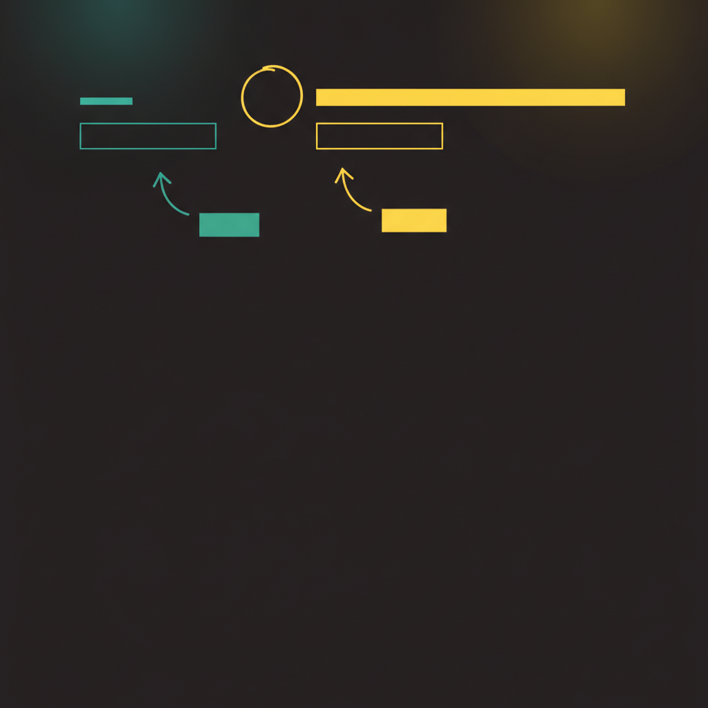
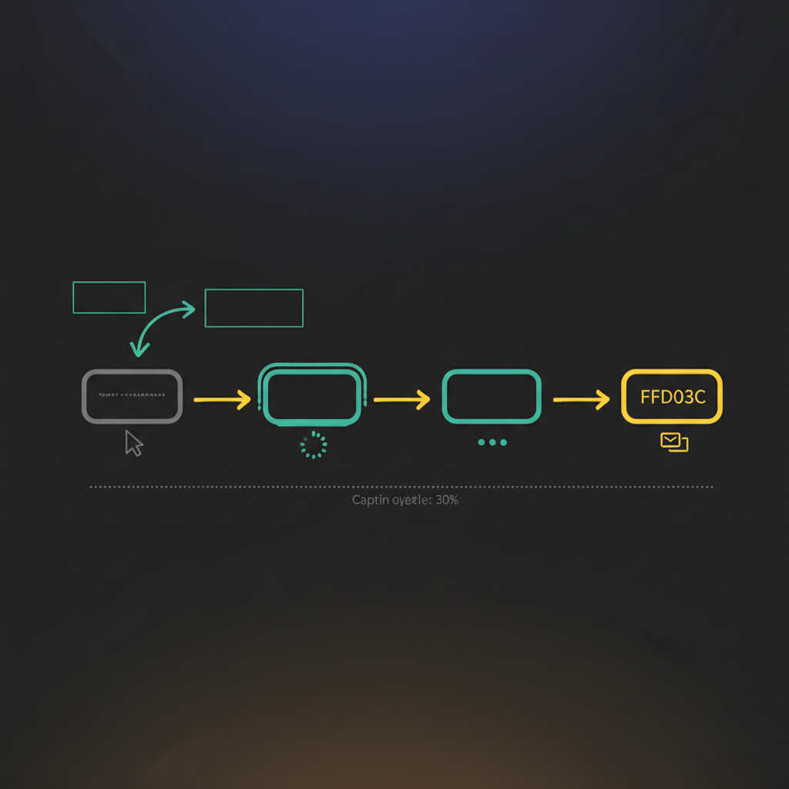
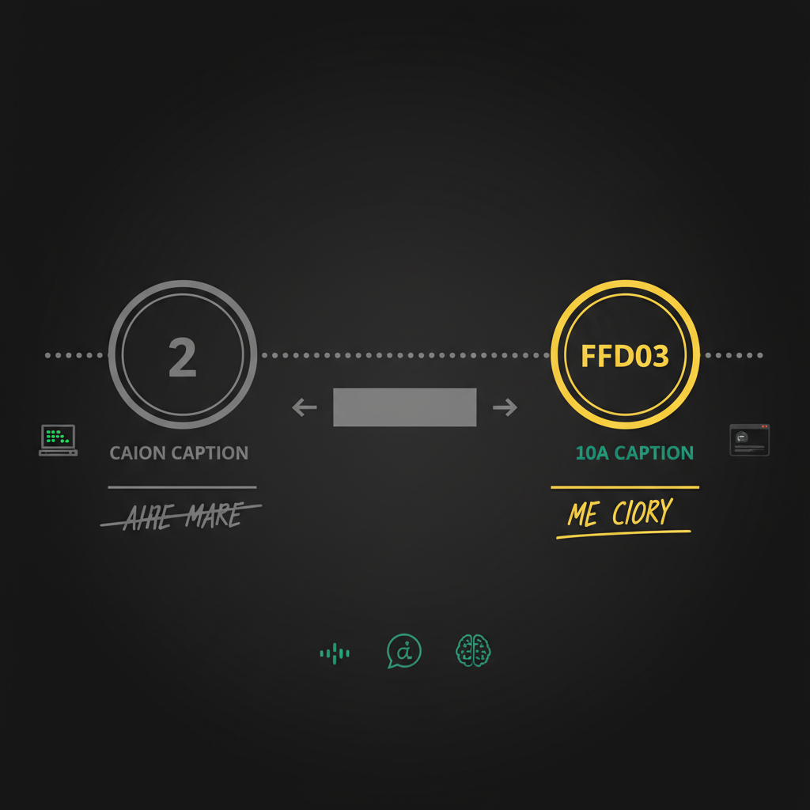
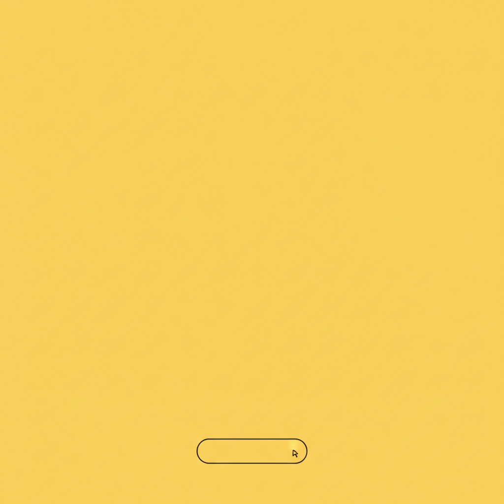
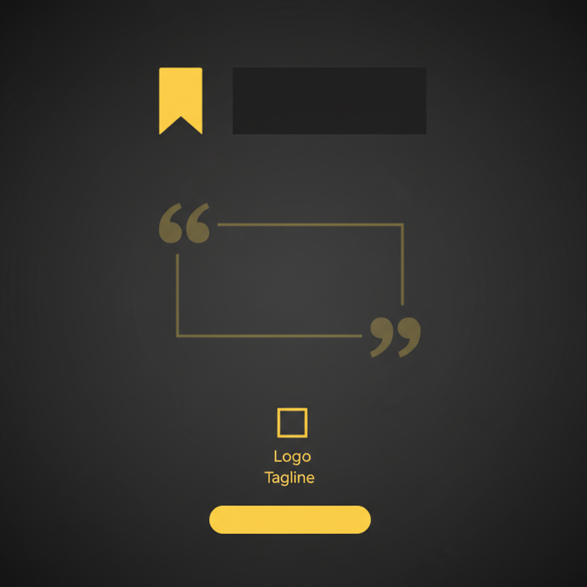

8-에이전트 파이프라인의 설계 품질, 구현 갭, 그리고 올바른 에이전트 구축 방법론에 대한 정밀 진단
@intent_in10t 인스타그램 채널을 위한 경험디자인 교육 캐러셀 7장을 AI 에이전트 파이프라인으로 자동 생성하는 시스템
Anthropic · Andrew Ng · LangGraph 3대 프레임워크 기준, 5점 만점. 종합: 1.98 / 5.00
Growth Analyst 피드백을 어떤 에이전트도 읽지 않음
2/8 에이전트만 외부 API Tool 연결
동적 작업 분해 없음. 7장 고정 구조
서브에이전트 구현됨. 파일 기반 핸드오프만
파이프라인이 "텍스트 없는 배경 이미지"에서 멈춘다. 한글 카피를 이미지 위에 합성하는 코드가 프로젝트 어디에도 없다.
| 단계 | 난이도 | 구현 | 소요 에너지 |
|---|---|---|---|
| 소재 탐색 (Scout) | 낮음 | ✓ 완성 | 높음 |
| 이론 분석 (Analyst) | 낮음 | ✓ 완성 | 높음 |
| 기획 (Strategist) | 낮음 | ✓ 완성 | 높음 |
| 카피 작성 (Writer) | 중간 | ✓ 완성 | 중간 |
| 배경 이미지 생성 | 중간 | ✓ 완성 | 중간 |
| 텍스트 오버레이 + 최종 이미지 | 높음 | ✗ 미구현 | 없음 |
| Figma 프레임 삽입 | 높음 | ✗ 실험 후 포기 | 최소 |
가장 난이도가 높고 불확실한 부분을 먼저 모듈화하여 PoC로 검증한다. 이 모듈이 작동하면, 나머지 파이프라인은 자연스럽게 이 모듈의 입력 스펙에 맞춰 설계된다.
8개 에이전트 중 고유한 "생성" 작업을 하는 것은 Scout과 Writer 2개뿐. 나머지는 검증, 변환, 또는 중복 사고 과정.
| 에이전트 | 유형 | 생성% | 검증% | 통합 제안 |
|---|---|---|---|---|
| Scout | 생성 | 70% | 20% | 유지 |
| Analyst | 중복 | 40% | 40% | → Narrative Architect |
| Strategist | 중복 | 60% | 30% | |
| Designer | 스펙 | 50% | 40% | → Creative Producer |
| Writer | 생성 | 80% | 15% | |
| Editor | 검증 | 10% | 70% | |
| Publisher | 변환 | 70% | 20% | 유지 |
| Growth Analyst | 피드백 | 40% | 50% | 유지 (비동기) |
Episode 2 "ChatGPT 대화 UX" — 배경 이미지 7장이 생성되었으나, 텍스트 오버레이 없이 파이프라인이 종료됨






같은 목적(인스타 캐러셀 자동화)을 "최종 산출물부터 역방향"으로 구축한 실제 사례
| 항목 | insta_auto (AS-IS) | figma_mcp_test (TO-BE) |
|---|---|---|
| 개발 순서 | 프롬프트 → 카피 → 이미지 → ??? (정방향) | Figma 캡처 → HTML 템플릿 → 스키마 → AI (역방향) |
| 최종 산출물 | 텍스트 없는 배경 이미지 (PNG) | 텍스트 포함 완성 카드 → Figma 프레임 |
| 에이전트 수 | 8개 (6개는 프롬프트만) | 4개 Python 모듈 (모두 실행 가능) |
| 라스트 마일 | 미구현 — 수동 Figma/Canva 작업 필요 | capture.js + HTTP 서버 → Figma 자동 삽입 |
| 에러 핸들링 | 없음 (API 실패 시 traceback) | Exponential backoff (2s/5s/10s), 부분 실패 허용 |
| 설정 관리 | 3개 문서에서 서로 다른 컬러값 | carousel_config.py 단일 소스 |
| E2E 작동 | 파이프라인 중간에서 멈춤 | 이미지 입력 → Figma 프레임까지 완전 자동 |
최종 포맷(1080×1350 HTML)을 먼저 고정하고, AI 출력이 이 스키마에 맞추도록 강제한다
가장 어렵고 불확실한 기술(Figma 캡처)을 첫 번째 모듈로 검증한다. 이것이 불가능하면 상류 전체가 무의미
잘못된 HTML → Figma 캡처 즉시 실패. 6단계 뒤가 아니라 즉시 피드백. Silent failure 원천 차단
"비즈니스에 도움이 되는 심리학" → TikTok 검색 → 영상 분석 → 5장 캐러셀 → Figma 자동 삽입. 풀 파이프라인 E2E 실행 결과.
최종 산출물(Figma 프레임)부터 역방향 설계. HTML 템플릿(고정 1080×1350) → JSON 스키마(5-slide 구조 강제) → AI 생성(유연). 가장 어려운 기술(Figma capture.js)이 Phase 0에서 검증됨.
7개 phase가 각각 독립 실행 가능. cli.py search / cli.py process 분리. 이미지 1장 실패해도 나머지 4장으로 갤러리 생성 (Partial Success).
Gemini 3.1 Pro(텍스트 추론) vs Flash Image(이미지 생성) 적절한 모델 분업. ScrapeCreators(검색), yt-dlp(다운로드), Figma MCP(캡처) 각 단계에 최적 도구. 범용 LLM에 모든 것을 맡기지 않음.
Exponential backoff (2s/5s/10s) + per-slide 에러 추적. JSON 파싱 실패 시 regex fallback. Silent failure 없이 즉시 로그 + manifest에 기록. 잘못된 HTML → Figma 캡처 즉시 실패로 빠른 피드백.
config.py 하나에 모든 상수 집중. 디자인 토큰 불일치 가능성 원천 차단.
카드 생성 이전에 실제 바이럴 콘텐츠를 발굴하고 분석하는 전처리 파이프라인. 주제만 입력하면 3개 SNS 플랫폼에서 자동 검색합니다.
ScrapeCreators API
3-platform 병렬 검색
30일 기간 필터
Relevance Score
토큰 오버랩 기반
구문 일치 보너스
동의어 확장 (AI→artificial intelligence)
저신호 토큰 페널티
auto: 상위 3건 / manual: ID 지정
yt-dlp
영상 다운로드 (mp4)
썸네일 추출 (png)
60초 타임아웃
실패 시 caption-only fallback
Gemini Files API
영상 업로드 → 멀티모달 분석
7개 분석 항목 추출:
| ID | 플랫폼 | 작성자 | 내용 요약 | 조회 | 좋아요 | 댓글 | 선택 |
|---|---|---|---|---|---|---|---|
| TK1 | TikTok | @kyleinmind | AI 아바타로 수익 창출하는 방법 | 23.3K | 420 | 123 | ✓ Selected |
| TK2 | TikTok | @library_yeorumi | 새벽에 불안할 때 읽는 책 5권 | 4.5K | 93 | 3 | |
| TK3 | TikTok | @benjamin_hyperclass | 비즈니스 시스템 없는 성장은 불꽃놀이 | 2.3K | 51 | 3 | |
| TK4 | TikTok | @mindhackkr | 뇌는 캠코더가 아닌 편집기 | 45 | 2 | 2 | |
| IG1 | @psychologyof_theday | 회사에서 팀장님을 놀려야 하는 이유 | 6.1K | 28 | 3 | ||
| IG2 | @arrietty_day | 무조건 팔리는 심리마케팅 기술 100 | 514 | - | 4 |
| 항목 | insta_auto | figma_mcp_test | sns_card_news |
|---|---|---|---|
| 성격 | 설계서 중심 | PoC / 프로토타입 | 프로덕션 시스템 |
| 파이프라인 | 8 에이전트 (프롬프트) | 4 Python 모듈 | 7 phase + FastAPI + Next.js |
| 최종 산출물 | 텍스트 없는 배경 PNG | Figma 프레임 (단일 카드) | Figma 프레임 (5장 갤러리) |
| 입력 → 출력 | 수동 프롬프트 8회 | 이미지 + 주제 → Figma | 주제만 → 검색 → 분석 → Figma |
| 에러 핸들링 | 없음 | 기본 retry | Exponential backoff + Partial Success + Manifest |
| 설정 관리 | 3개 문서 불일치 | config.py 단일 | config.py + .env 3-location |
| 배포 | 로컬만 | 로컬만 | Docker + Railway + Vercel |
Based on Anthropic "Building Effective Agents" (2024), Andrew Ng Agentic Design Patterns (2024), LangGraph Documentation
AI Transformation Consultant Review • 2026.03.20